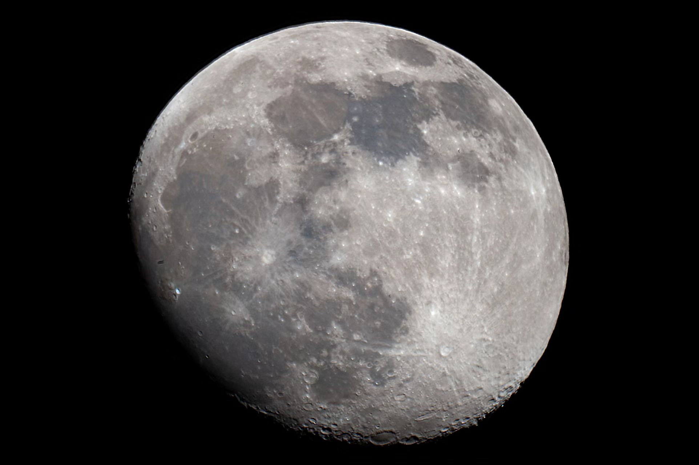

盈凸月(十四) 李瀚翾 2022-05-15 天文摄影 天文摄影  设备: Explore Scientific 152/1900 mm 马卡 + EXOS-2 Goto 赤道仪相机: 尼康 D700时间: 2022-05-14 晚地点: 阳台 这一次调整了感光度, 消除了图片中的彩噪, 并且曝光处理在了正确的范围内但是由于拍摄过程中存在抖动, 导致图片堆叠效果较差最终选取了单张照片使用 PS 进行了防抖处理, 消除了单张图片中的抖动虚像然后, 饱和度拉满 !!!